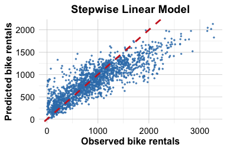
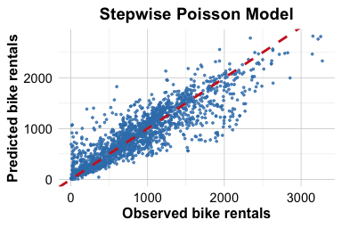
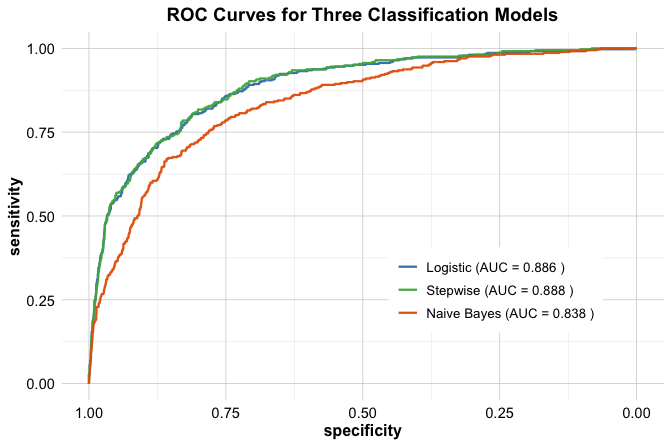

| Outcome type | Response distribution | Link function | Model |
|---|---|---|---|
| Continuous outcome | Normal | Identity | Linear regression |
| Binary outcome | Bernoulli/binomial | Logit | Logistic regression |
| Count outcome | Poisson | Log | Poisson regression |
11 Generalized Linear Models for Binary and Count Outcomes
The theory of probabilities is at bottom nothing but common sense reduced to calculation.
Many data science problems ask not only how much we expect, but whether an event will occur or how many times it will occur. Will a loan application be approved? Will a patient have a disease? How many service calls will a customer make within a given period? These questions involve binary or count-based outcomes rather than continuous responses, and they require a broader regression framework.
In Chapter 10, we developed regression models for continuous outcomes such as house prices, healthcare costs, and hourly bike rental demand. These models allowed us to relate a numerical response variable to a set of predictors, interpret coefficient estimates, and generate predictions. However, when the response variable represents the probability of an event or the number of events, ordinary linear regression no longer matches the structure of the data.
When used for binary responses, ordinary linear regression can produce fitted values below 0 or above 1, even though probabilities must lie between 0 and 1. When used for count responses, it does not naturally respect the discrete and non-negative structure of the data. In both cases, the variability of the response is linked to its mean in ways that differ from the constant-variance setting of ordinary linear regression. Applying a linear regression model mechanically can therefore lead to predictions and interpretations that are difficult to justify.
Generalized linear models address these limitations while preserving the central idea of regression: relating an outcome to a set of predictors in an interpretable way. In this chapter, we first introduce the general structure of generalized linear models, then study logistic regression for binary outcomes and Poisson regression for count outcomes. We then apply these ideas in a case study on predicting online purchase intention, following the Data Science Workflow introduced in Chapter 2. Together, these sections show how regression methods can support interpretation, prediction, and decision-making beyond the setting of continuous outcomes.
What This Chapter Covers
This chapter introduces generalized linear models as an extension of ordinary linear regression for response variables that are not continuous. We begin by examining why ordinary linear regression is unsuitable for binary and count outcomes, and then introduce the three components of a generalized linear model: the response distribution, the linear predictor, and the link function.
We then study two important members of the GLM family. Logistic regression is used for binary outcomes and allows us to model event probabilities, interpret coefficients through odds ratios, and convert predicted probabilities into class predictions when a decision threshold is required. Poisson regression is used for count outcomes and allows us to model expected counts, interpret multiplicative predictor effects, and assess practical issues such as overdispersion.
Finally, we apply logistic regression in a case study on predicting online purchase intention. The case study emphasizes probability-based prediction and compares classification models using ROC curves and the area under the curve, introduced in Chapter 8. By the end of the chapter, you will be able to recognize when generalized linear models are needed, fit and interpret logistic and Poisson regression models in R, and evaluate probability-based classifiers in an applied data science workflow.
11.1 From Linear Regression to Generalized Linear Models
Ordinary linear regression provides the starting point for much of regression modeling, but its assumptions are most appropriate for continuous responses. To extend regression to binary and count outcomes, we need models that match the structure of the response and relate predictors to the expected outcome on an appropriate scale. This section introduces that extension by first explaining why ordinary linear regression is not enough for these settings and then presenting the three components of a generalized linear model.
Why Linear Regression Is Not Enough
Linear regression is a powerful starting point because it gives us a clear way to relate a response variable to a set of predictors. However, its assumptions are closely tied to continuous outcomes. When the response is binary or count-based, a standard linear regression model may no longer respect the basic structure of the outcome.
For a binary response, the quantity of interest is usually a probability. A model for such an outcome should therefore produce fitted values between 0 and 1. Linear regression does not guarantee this. It can return fitted values below 0 or above 1, which cannot be interpreted as probabilities. In addition, the variability of a binary response depends on the probability of the event. If the event probability is \(p\), then the variance is \(p(1-p)\), so the variability is smaller when \(p\) is close to 0 or 1 and larger when \(p\) is close to 0.5. This differs from the constant-variance assumption used in ordinary linear regression.
For count data, the response records how many times an event occurs. Counts are non-negative integers, so a model for their expected value should not produce negative fitted values. Linear regression does not impose this restriction. Count outcomes also often become more variable as their expected value increases. For example, the number of service calls made by customers is likely to vary more among customers with high expected usage than among customers with very low expected usage.
These limitations suggest that regression models should be adapted to the type of response variable being analyzed. For binary outcomes, we need a model for event probabilities. For count outcomes, we need a model for non-negative expected counts. Generalized linear models provide a unified framework for making these adaptations while preserving the central regression idea of relating an outcome to a set of predictors.
Rather than treating binary and count outcomes as cases outside regression, generalized linear models extend regression by combining a suitable response distribution, a linear predictor, and a link function. The next subsection introduces these three components more formally.
The Three Components of a Generalized Linear Model
A generalized linear model, often abbreviated as GLM, is defined by three connected components. Together, these components specify how the response is distributed, how the predictors enter the model, and how the expected response is linked to those predictors.
The first component is the random component. This specifies the probability distribution of the response, conditional on the predictors. In ordinary linear regression, the response is continuous and is typically modeled using a normal distribution around its conditional mean. In a generalized linear model, by contrast, we choose a distribution that matches the type of outcome being analyzed. For individual binary responses, the Bernoulli distribution is the relevant special case of the binomial distribution. For count data, the Poisson distribution is often used as a starting point.
The second component is the systematic component. This is the linear predictor, \[ \eta = \beta_0 + \beta_1 x_1 + \cdots + \beta_p x_p. \]
Here, \(\beta_0, \beta_1, \dots, \beta_p\) are coefficients and \(x_1, x_2, \dots, x_p\) are predictors. This part of the model closely resembles the regression equations introduced in Chapter 10. It preserves the central regression idea that predictors combine linearly, although not necessarily on the original scale of the response.
The third component is the link function. This function connects the conditional mean of the response to the linear predictor. If we let \(\mu = \mathbb{E}(Y \mid x_1, \dots, x_p)\) denote the expected response for a given set of predictor values, then a generalized linear model has the form \[ g(\mu) = \eta. \]
Here, \(g(\cdot)\) is the link function. Its role is to transform the mean response to a scale on which a linear relationship with the predictors is appropriate.
In ordinary linear regression, the link function is the identity link, so that \[ \mu = \eta. \]
This means that the expected response is modeled directly as a linear function of the predictors. In logistic regression, the link function is the logit, which maps a probability to the log-odds scale. In Poisson regression, the link function is the logarithm, which maps a positive expected count to the real line.
Taken together, these three components show that generalized linear models do not replace regression, but extend it. Ordinary linear regression can itself be viewed as a special case of the GLM framework, with a normal response distribution and the identity link. Logistic and Poisson regression follow the same general structure while adapting it to binary and count outcomes.
Common GLMs for Different Outcome Types
The three GLM components come together differently depending on the type of response variable being modeled. In practice, this means choosing a response distribution that matches the outcome and a link function that connects the conditional mean of the response to the linear predictor. Table Table 11.1 summarizes the main cases considered in this chapter.
For a continuous response, the normal distribution together with the identity link gives the ordinary linear regression model developed in Chapter 10. For a binary response, the Bernoulli distribution for individual outcomes, or more generally the binomial distribution, combined with the logit link gives logistic regression. For a count response, the Poisson distribution combined with the log link gives Poisson regression.
This comparison highlights an important point: logistic and Poisson regression are not isolated methods unrelated to linear regression. They belong to the same general framework. What changes across these models is the response distribution and the link function used to connect the conditional mean of the response to the predictors. In this way, generalized linear models provide a unified language for regression across different types of outcomes.
This framework guides the rest of the chapter. We begin with logistic regression, which applies these ideas to binary outcomes and shows how regression can be used to model event probabilities in a principled and interpretable way.
11.2 Logistic Regression for Binary Outcomes
Many important data science questions involve a binary outcome. Will a loan application be accepted? Will a patient respond to treatment? Will a transaction be classified as fraudulent? In each case, the response takes one of two possible values. Earlier in the book, we approached such problems from a classification perspective through methods such as k-Nearest Neighbors in Chapter 7 and the Naive Bayes classifier in Chapter 9. We now turn to a complementary model-based approach that places binary outcomes within the regression framework: logistic regression.
Logistic regression is one of the most widely used generalized linear models. Rather than modeling the binary response directly as a numerical value, it models the probability of an event. The model does this through a transformation that keeps fitted probabilities between 0 and 1, avoiding key problems of ordinary linear regression for binary data such as fitted values outside \([0,1]\) and an inappropriate linear relationship on the probability scale.
Let \(Y = 1\) denote the event of interest and let \(p = P(Y = 1)\) denote the probability that this event occurs. In a loan application setting, for example, the event of interest might be that a loan application is approved. In a medical setting, it might be that a patient responds to treatment. The specific event changes from one application to another, but the modeling idea remains the same: logistic regression models the probability of the event of interest.
Instead of modeling \(p\) directly as a linear function of the predictors, logistic regression first considers the odds of the event, \[ \text{odds} = \frac{p}{1-p}. \]
The odds compare the probability that the event occurs with the probability that it does not occur. If \(p = 0.8\), then the odds are \(0.8/0.2 = 4\), meaning that the event is four times as likely to occur as not to occur.
Because odds are always positive, we take their natural logarithm to obtain the log-odds, also called the logit: \[ \text{logit}(p) = \log\left(\frac{p}{1-p}\right). \]
This transformation maps probabilities in the interval \((0,1)\) to the entire real line. Logistic regression then models the transformed probability as a linear function of the predictors: \[ \text{logit}(p) = \beta_0 + \beta_1 x_1 + \cdots + \beta_p x_p. \]
This is the logistic regression model. It states that the predictors have a linear effect on the log-odds scale. Although the model is linear in the coefficients, the relationship between the predictors and the probability itself is nonlinear. Solving the equation above for \(p\) gives the inverse-logit form: \[ p = \frac{ e^{\beta_0 + \beta_1 x_1 + \cdots + \beta_p x_p} }{ 1 + e^{\beta_0 + \beta_1 x_1 + \cdots + \beta_p x_p} }. \]
This expression guarantees that predicted probabilities always lie between 0 and 1. That is the key reason logistic regression is appropriate for binary outcomes. It preserves the central regression idea of relating an outcome to predictors, but does so on a scale that matches the structure of binary data. In this way, logistic regression provides a statistically coherent and interpretable framework for modeling event probabilities.
Fitting and Interpreting a Logistic Regression Model in R
We now fit a logistic regression model in R using the loan dataset from the liver package. This dataset was introduced earlier in Chapter 9, where we used it to illustrate the Naive Bayes classifier. Here, we return to the same binary prediction problem from a regression perspective. Our goal is to model the loan outcome loan_status using applicant characteristics and financial indicators.
We begin by loading the dataset:
The dataset contains 4269 observations and 13 variables. The response variable is loan_status, while the remaining variables describe aspects of the applicant’s financial profile, asset values, and background.
Before fitting the model, it is useful to inspect the levels of the response variable. In logistic regression with a two-level factor response, R treats the second factor level as the modeled event by default. We therefore define the event of interest explicitly. Since we want to model the probability that a loan is approved, we set "rejected" as the reference category:
levels(loan$loan_status)
[1] "approved" "rejected"
loan$loan_status <- relevel(loan$loan_status, ref = "rejected")
levels(loan$loan_status)
[1] "rejected" "approved"Because "rejected" is the reference level, the model estimates the probability that loan_status = "approved". All coefficient interpretations in this example therefore refer to the odds of loan approval.
To keep the example concise, we include all available predictors except loan_id, which serves only as an identifier and does not carry predictive meaning. This allows us to focus on model fitting and interpretation without listing each predictor individually. We first define the model formula:
formula_loan <- loan_status ~ . - loan_idWe then fit the logistic regression model using the glm() function. The argument family = binomial tells R to fit a generalized linear model for a binary response using the logit link:
glm_loan <- glm(formula = formula_loan, data = loan, family = binomial)To inspect the fitted model, we use:
summary(glm_loan)
Call:
glm(formula = formula_loan, family = binomial, data = loan)
Coefficients:
Estimate Std. Error z value Pr(>|z|)
(Intercept) -1.131e+01 4.377e-01 -25.833 < 2e-16 ***
no_of_dependents -1.780e-02 3.487e-02 -0.510 0.6097
educationnot-graduate -1.153e-01 1.183e-01 -0.975 0.3298
self_employedyes 6.739e-02 1.181e-01 0.570 0.5684
income_annum -6.137e-07 9.081e-08 -6.758 1.4e-11 ***
loan_amount 1.447e-07 1.812e-08 7.986 1.4e-15 ***
loan_term -1.516e-01 1.144e-02 -13.253 < 2e-16 ***
cibil_score 2.483e-02 8.385e-04 29.612 < 2e-16 ***
residential_assets_value 2.923e-09 1.187e-08 0.246 0.8055
commercial_assets_value 1.903e-08 1.729e-08 1.101 0.2711
luxury_assets_value 3.130e-08 1.749e-08 1.789 0.0735 .
bank_asset_value 5.076e-08 3.342e-08 1.519 0.1287
---
Signif. codes: 0 '***' 0.001 '**' 0.01 '*' 0.05 '.' 0.1 ' ' 1
(Dispersion parameter for binomial family taken to be 1)
Null deviance: 5660.7 on 4268 degrees of freedom
Residual deviance: 1877.7 on 4257 degrees of freedom
AIC: 1901.7
Number of Fisher Scoring iterations: 7The output reports the estimated coefficients, their standard errors, the corresponding z-statistics, and p-values. As in linear regression, these quantities help us assess the direction and strength of the relationship between each predictor and the response. In logistic regression, however, the coefficients are interpreted on the log-odds scale rather than on the original response scale.
Each coefficient in a logistic regression model can be interpreted on two closely related scales. On the model scale, it describes the change in the log-odds of loan approval associated with a one-unit increase in the predictor, holding the other predictors fixed. After exponentiation, the coefficient can be interpreted as an odds ratio. For a numeric predictor \(x_j\), exponentiating the coefficient \(\beta_j\) gives \[ e^{\beta_j}, \] which represents the multiplicative change in the odds of loan approval associated with a one-unit increase in \(x_j\).
For example, according to the fitted model, the coefficient of loan_term is -0.152. The corresponding odds ratio is \(e^{-0.152}\) = 0.859. This means that a one-unit increase in loan_term multiplies the odds of loan approval by about 0.859, holding all other predictors fixed. If the odds ratio is greater than 1, the predictor increases the odds of approval; if it is less than 1, the predictor decreases the odds of approval.
For categorical predictors such as education or self_employed, the interpretation is relative to the reference category. In that case, the exponentiated coefficient compares the odds of loan approval in one category with the odds of loan approval in the reference category, holding the other predictors fixed. More generally, when factor variables are included in a model formula, R automatically creates the required indicator variables and uses one level as the reference category.
At this stage, we fit the model using the full dataset because our main goal is to understand model specification and coefficient interpretation. Later in this chapter, we return to logistic regression in a predictive setting and evaluate its out-of-sample performance in a fuller case study on predicting online purchase intention.
Taken together, these results show how logistic regression combines model estimation with interpretable coefficient analysis, allowing us to examine how individual predictors relate to the odds of loan approval.
Practice: Apply stepwise regression, as introduced in Section 10.5, to the logistic regression model as an exploratory model simplification exercise. Compare the selected model with the full model in terms of retained predictors, coefficient patterns, and overall interpretability. What does the reduced model suggest about the main factors related to loan approval?
From Estimated Probabilities to Classification Decisions
A logistic regression model produces predicted probabilities rather than class labels directly. These probabilities describe the estimated chance that each observation belongs to the modeled event category. In many applications, this probabilistic output is already useful, since it allows us to rank observations by estimated risk or likelihood.
Predicted probabilities can be obtained using predict() with type = "response":
round(predict(glm_loan, newdata = loan[1:5, ], type = "response"), 3)
1 2 3 4 5
0.998 0.078 0.211 0.420 0.002These values represent the model’s estimated probabilities for the event corresponding to the second level of loan_status, which here is approved. Since we set "rejected" as the reference category in the previous subsection, the modeled event is loan approval. In other words, these values give the estimated probability that each selected loan application will be approved. For example, for the first application in the loan dataset, the estimated probability of approval is 0.998.
In some situations, predicted probabilities are the final quantity of interest. In others, however, we need a class prediction such as approved or rejected. To move from probabilities to class labels, we choose a decision threshold. The most common choice is 0.5: if the predicted probability of approval is at least 0.5, we classify the application as approved; otherwise, we classify it as rejected.
loan_probs <- predict(glm_loan, newdata = loan, type = "response")
loan_pred_05 <- ifelse(loan_probs >= 0.5, "approved", "rejected")
loan_pred_05 <- factor(loan_pred_05, levels = levels(loan$loan_status))
table(loan_pred_05)
loan_pred_05
rejected approved
1611 2658The threshold is applied to the probability of the modeled event. In this example, the modeled event is loan approval, so lowering the threshold makes it easier for an application to be classified as approved, while raising the threshold makes the classification rule more selective.
Although a threshold of 0.5 is common, it is not always the most appropriate choice. The preferred threshold depends on the goals of the application and the relative consequences of different types of errors. In loan approval, for example, a lender may choose a higher threshold for approval if the cost of approving a risky application is especially high. Conversely, a lower threshold may be preferred if the cost of rejecting applicants who would in fact repay the loan is considered greater. The threshold should therefore reflect the practical balance between caution and opportunity in the decision process.
This highlights one of the main strengths of logistic regression. It separates the task of estimating probabilities from the task of making decisions. The model provides estimated probabilities, and the analyst selects a threshold that reflects the practical context. In the case study later in this chapter, we evaluate probability-based classifiers using ROC curves and the area under the curve, which allow us to assess classification performance across all possible thresholds rather than relying on a single cutoff.
Logistic regression therefore serves two closely related purposes. It is a regression model for binary outcomes, and it is also a classification tool that yields interpretable probabilities. This combination of interpretability, flexibility, and practical usefulness explains why logistic regression remains one of the most important methods for binary data analysis.
Practice: Use the fitted logistic regression model to generate predicted probabilities for the
loandataset, then convert them into class predictions using thresholds of 0.5 and 0.3. Compare the resulting decisions. How does lowering the threshold change the number of approved applications, and what does this suggest about the trade-off between approving risky applicants and rejecting applicants who might in fact repay the loan?
11.3 Poisson Regression for Count Outcomes
Not all response variables describe whether an event occurs. In many applications, the outcome records how many times something happens within a fixed period or setting. Examples include the number of doctor visits, the number of insurance claims, the number of purchases made in a week, or the number of website visits in an hour. In Section 10.9, for example, we modeled hourly bike rental demand using the variable bike_count, which records the number of bikes rented in each hour. Outcomes of this kind are not continuous and are not simply binary. They are counts, and they require a model that respects their discrete, non-negative nature.
Poisson regression is one of the most important generalized linear models for this setting. It extends the regression framework to responses that represent event frequencies, allowing us to relate expected counts to a set of predictors in a structured and interpretable way. Just as logistic regression adapts regression to binary outcomes, Poisson regression adapts it to count outcomes. Revisiting bike_count from Section 10.9 will therefore help us see how a generalized linear model can sometimes provide a more natural representation of a count response than ordinary linear regression.
This matters because ordinary linear regression is not well suited to count data. A linear model can produce fitted values that are negative, even though counts must be non-negative. It also assumes a constant variance, whereas count outcomes often become more variable as their expected value increases. In addition, count data are often right-skewed, with many small values and fewer large ones. These features make the normal-error framework of linear regression less appropriate.
Poisson regression addresses these limitations by modeling the expected count through a distribution and link function designed for count outcomes. It is based on the Poisson distribution, named after the French mathematician Siméon Denis Poisson (1781–1840), who studied models for the number of events occurring within a fixed interval. If \(Y\) follows a Poisson distribution with parameter \(\lambda > 0\), then its probability mass function is \[ P(Y = y) = \frac{e^{-\lambda}\lambda^y}{y!}, \qquad y = 0,1,2,\dots \] where \(\lambda\) is the expected count. A key feature of the Poisson distribution is that its mean and variance are both equal to \(\lambda\): \[ \mathbb{E}(Y) = \lambda, \qquad \text{Var}(Y) = \lambda. \]
To relate the expected count to predictors, Poisson regression uses the log link: \[ \log(\lambda) = b_0 + b_1 x_1 + b_2 x_2 + \dots + b_m x_m. \]
This is the Poisson regression model. It states that the logarithm of the expected count is a linear function of the predictors. Solving for \(\lambda\) gives \[ \lambda = e^{b_0 + b_1 x_1 + b_2 x_2 + \dots + b_m x_m}. \]
This formulation guarantees that the expected count is always positive. It also implies that predictors act multiplicatively on the original count scale, even though their effects are additive on the log scale. In this way, Poisson regression provides a statistically coherent and interpretable framework for modeling count outcomes.
Fitting and Interpreting a Poisson Regression Model for Bike Demand
In Section 10.9, we modeled hourly bike rental demand using linear regression, including nonlinear terms and a square-root transformation of the response. That analysis showed that linear regression can provide a useful approximation for this problem. At the same time, the response variable bike_count records the number of bike rentals in each hour, so it is fundamentally a count outcome. This makes Poisson regression a natural alternative to consider.
To make the comparison with Section 10.9 meaningful, we follow the same data preparation and partitioning steps introduced there. In particular, we derive weekday from date, retain only functioning days, order the observations chronologically, and use the same 80%–20% split into training and test sets. We also use the same set of predictors as in the linear regression analysis, but we now fit a Poisson regression model directly to the original response bike_count rather than to a transformed version of it.
We begin by fitting a full Poisson regression model to the training data:
We use the same predictor set as in the linear regression analysis, but now fit the model with glm() and family = poisson, so that bike_count is modeled directly as a count outcome. This tells R to use the Poisson distribution for the response and the log link function to relate the expected count to the predictors. As in Chapter 10, we can also use stepwise regression to obtain a more parsimonious model:
stepwise_reg_glm <- step(full_reg_glm, direction = "both", trace = FALSE)The fitted model can be examined in R using summary(stepwise_reg_glm), which reports the estimated coefficients, their standard errors, the corresponding z-statistics, and p-values. Because the full output is lengthy, we do not reproduce it here. Instead, we focus on interpreting the main types of coefficients that arise in the model.
For example, the fitted coefficient of temperature is positive (0.061), indicating that warmer conditions are associated with a higher expected number of hourly bike rentals, holding the remaining predictors fixed. Exponentiating this coefficient gives \(e^{0.061} \approx 1.06\), which means that a one-unit increase in temperature is associated with about a 6% increase in the expected number of bike rentals. Similarly, the coefficient for holidayno is interpreted relative to the reference category holidayyes. It therefore describes how the expected number of bike rentals on non-holidays differs from that on holidays, holding the other predictors fixed.
Each coefficient can be interpreted on two closely related scales. On the model scale, it describes the change in the log of the expected count associated with a one-unit increase in the predictor. After exponentiation, the coefficient can be interpreted as a multiplicative effect on the expected count. For a numeric predictor \(x_j\), exponentiating the coefficient \(b_j\) gives \(e^{b_j}\), which represents the factor by which the expected number of bike rentals changes when \(x_j\) increases by one unit, holding the other predictors fixed.
We then generate predicted expected counts for the test set using predict() with type = "response":
pred_stepwise_glm <- predict(stepwise_reg_glm, newdata = test_bike, type = "response")These values are the model’s estimated expected numbers of bike rentals for the test observations. Because Poisson regression predicts expected counts, the fitted values do not need to be integers. They represent average expected demand rather than literal realized outcomes.
We can now compare the Poisson regression model with the earlier linear regression model from Section 10.9 on the original bike_count scale. To compare the Poisson model with the earlier linear regression analysis, we summarize predictive performance on the original bike_count scale using RMSE and predictive \(R^2\):
Model RMSE R2
1 Stepwise linear model 333.8172 0.6897669
2 Stepwise Poisson model 289.1020 0.7673125In this setting, the stepwise Poisson model achieves a lower predictive RMSE and a higher predictive \(R^2\) than the stepwise linear model from Chapter 10. In particular, the predictive RMSE decreases from about 333.8 to about 289.1, while the predictive \(R^2\) increases from about 0.69 to about 0.77. This suggests that modeling bike_count directly as a count outcome provides a more appropriate and more effective starting point for this problem. A likely reason is that bike_count is non-negative and right-skewed, and its variability tends to increase with its mean. These are characteristics for which Poisson regression is often better suited than ordinary linear regression.
Figure 11.1 compares observed and predicted bike rentals for the stepwise linear model from Chapter 10.9 and the stepwise Poisson model. The Poisson model produces predictions that track the diagonal reference line more closely, which is consistent with its improved predictive performance on the test set. At the same time, Poisson regression should still be viewed as a starting point rather than a final answer for every count-data problem. Hourly demand data may exhibit overdispersion, meaning that the variability in the response exceeds what the Poisson model assumes. It is therefore important to check model adequacy in practice, even when Poisson regression performs better than ordinary linear regression.


Practice: Revisit the
bike_demandanalysis from Section 10.9 and compare the stepwise linear regression model with the stepwise Poisson regression model. Choose one numeric predictor and one categorical predictor from the Poisson model output, and interpret their coefficients on both the log scale and the expected-count scale. Then explain how modelingbike_countas a count outcome changes the interpretation of predictor effects relative to the linear regression analysis in Chapter 10.
11.4 Case Study: Predicting Online Purchase Intention with Logistic Regression
Predicting whether an online browsing session will end in a purchase is a common classification problem in e-commerce. Accurate probability estimates can help businesses identify sessions with high conversion potential, target promotions more effectively, and better understand the factors related to customer purchasing behavior. In this case study, we ask a focused question: can an interpretable logistic regression model provide competitive probability-based predictions for online purchase intention?
The purchase_intention dataset comes from the UC Irvine Machine Learning Repository and is distributed with the liver package. It was described by (sakar2019real?) in the context of predicting online purchasing behavior. The response variable, revenue, records whether a session resulted in a completed transaction, while the predictors describe browsing behavior, session-level characteristics, and visitor-related features. This makes the dataset well suited for illustrating logistic regression in a realistic binary classification setting.
Following the Data Science Workflow introduced in Chapter 2 and illustrated in Figure 2.3, this case study moves from problem understanding and data overview to model fitting, evaluation, and interpretation. We first fit a baseline logistic regression model using all available predictors. We then fit a stepwise logistic regression model. Finally, we include the Naive Bayes classifier from Chapter 9 as a benchmark based on a different modeling principle. The comparison emphasizes not only predictive performance, but also interpretability, parsimony, and the practical value of probability-based predictions.
Problem Understanding
Online retailers routinely seek to understand which browsing sessions are most likely to end in a purchase. Identifying sessions with a high probability of conversion can help businesses target promotions more effectively, improve recommendation strategies, allocate marketing resources, and refine website design. This makes purchase intention a natural prediction problem in e-commerce: given information recorded during a browsing session, can we estimate whether that session will generate revenue?
From a modeling perspective, this is a binary classification problem. The outcome variable revenue records whether a session ended in a purchase (yes) or not (no). The predictors include behavioral variables, such as the number of pages visited and the time spent on different types of pages, together with session-level and visitor-level characteristics such as month, visitor_type, traffic_type, and weekend. Our aim is to estimate the probability of purchase for each session while also considering the trade-off between predictive performance and interpretability. For this reason, we begin with logistic regression, then consider a stepwise logistic regression model, and finally compare these models with Naive Bayes as an external benchmark.
Overview of the Dataset
The purchase_intention dataset contains session-level information from an online shopping website. Each observation corresponds to a single browsing session, and the modeling objective is to predict whether that session ended in a purchase (revenue = "yes" or "no"). The dataset combines behavioral measures with session-level and visitor-related characteristics, making it well suited for supervised classification in an e-commerce setting.
We begin by loading the dataset into R and inspecting its structure to understand the variables available for modeling:
library(liver)
data(purchase_intention)
str(purchase_intention)
'data.frame': 12330 obs. of 18 variables:
$ administrative : int 0 0 0 0 0 0 0 1 0 0 ...
$ administrative_duration : num 0 0 0 0 0 0 0 0 0 0 ...
$ informational : int 0 0 0 0 0 0 0 0 0 0 ...
$ informational_duration : num 0 0 0 0 0 0 0 0 0 0 ...
$ product_related : int 1 2 1 2 10 19 1 0 2 3 ...
$ product_related_duration: num 0 64 0 2.67 627.5 ...
$ bounce_rates : num 0.2 0 0.2 0.05 0.02 ...
$ exit_rates : num 0.2 0.1 0.2 0.14 0.05 ...
$ page_values : num 0 0 0 0 0 0 0 0 0 0 ...
$ special_day : num 0 0 0 0 0 0 0.4 0 0.8 0.4 ...
$ month : Ord.factor w/ 10 levels "Feb"<"Mar"<"May"<..: 1 1 1 1 1 1 1 1 1 1 ...
$ operating_systems : Factor w/ 8 levels "1","2","3","4",..: 1 2 4 3 3 2 2 1 2 2 ...
$ browser : Factor w/ 13 levels "1","2","3","4",..: 1 2 1 2 3 2 4 2 2 4 ...
$ region : Factor w/ 9 levels "1","2","3","4",..: 1 1 9 2 1 1 3 1 2 1 ...
$ traffic_type : Factor w/ 20 levels "1","2","3","4",..: 1 2 3 4 4 3 3 5 3 2 ...
$ visitor_type : Factor w/ 3 levels "New_Visitor",..: 3 3 3 3 3 3 3 3 3 3 ...
$ weekend : Factor w/ 2 levels "no","yes": 1 1 1 1 2 1 1 2 1 1 ...
$ revenue : Factor w/ 2 levels "no","yes": 1 1 1 1 1 1 1 1 1 1 ...The dataset consists of 12330 observations and 18 variables. The response variable, revenue, is binary and indicates whether the session resulted in a completed transaction. The predictors describe several aspects of the browsing session. Some variables summarize browsing behavior, including the number of administrative, informational, and product-related pages visited and the time spent on each type of page. Others capture session quality and commercial relevance, such as bounce_rates, exit_rates, page_values, and special_day. Additional variables describe session and visitor characteristics, including month, weekend, visitor_type, traffic_type, region, browser, and operating_systems.
Taken together, these predictors provide a rich description of online shopping sessions and the conditions under which purchases occur. For this case study, the dataset is already stored in an analysis-ready format, with categorical variables represented as factors and the binary outcome clearly defined. As a result, we can proceed directly to data setup for modeling, focusing on how the data will be partitioned for training and evaluation rather than on additional cleaning steps.
Data Setup for Modeling
To evaluate how well our models generalize to new data, we divide the purchase_intention dataset into separate training and test sets. We use the training set to fit the models and reserve the test set for out-of-sample evaluation. This separation is essential because it allows us to assess predictive performance on observations that were not used during model fitting.
Following the approach used elsewhere in the book, we use the partition() function from the liver package to create an 80% training set and a 20% test set. We also set a random seed to ensure that the results are reproducible:
The split assigns most observations to the training set while leaving a substantial subset for model evaluation. The vector test_labels stores the true class labels for later comparison with predicted probabilities and class predictions.
Because revenue is the response variable, it is useful to check whether its class proportions are similar in the training and test sets. Large differences in class balance could make the evaluation less representative of the original data. Following Section 6.2, this can be assessed descriptively by comparing class proportions, or more formally with a two-sample Z-test for equality of proportions. In this case study, we use the descriptive check:
prop.table(table(train_set$revenue))
no yes
0.8437753 0.1562247
prop.table(table(test_set$revenue))
no yes
0.851176 0.148824These proportions indicate that, in this split, the class distribution is similar across the training and test sets. The test set therefore provides a reasonable basis for comparing model performance. This descriptive check is more appropriate here than a formal hypothesis test, since the goal is not to test whether the two subsets come from different populations, but to ensure that the split has not produced an obviously unbalanced evaluation set.
No additional preprocessing is required at this stage for the baseline logistic regression and Naive Bayes models. The dataset is already stored in an analysis-ready format, with categorical predictors represented as factors and numerical predictors ready for direct use. We can now proceed to model fitting.
Practice: Repeat the analysis using a 70% training set and a 30% test set. Compare the class distribution of
revenueacross the resulting subsets. If desired, use a two-sample Z-test to assess whether the difference in class proportions is statistically significant. How much do the evaluation results change when the partitioning ratio is altered?
Fitting the Baseline Logistic Regression Model
We begin with logistic regression, which serves as the main modeling approach in this case study. Logistic regression is a natural choice because the response variable is binary and the goal is to estimate the probability that an online browsing session ends in a purchase.
We fit a baseline logistic regression model using all available predictors in the training set. In glm(), the argument family = binomial specifies a logistic regression model for a binary response:
baseline_logit = glm(formula = revenue ~ ., data = train_set, family = binomial)Once the model has been fitted, we generate predicted probabilities for the observations in the test set:
baseline_probs = predict(baseline_logit, newdata = test_set, type = "response")In logistic regression, predict(..., type = "response") returns estimated probabilities rather than class labels. In this dataset, revenue is coded with levels "no" and "yes", so these values represent the estimated probability that a session ends in a purchase, that is, the probability of revenue = "yes".
At this stage, we retain the predicted probabilities rather than converting them immediately into class labels. Probability-based predictions allow us to evaluate the model across different classification thresholds. In particular, they are required for ROC curves and AUC, which we use later in this case study and which were introduced in Chapter 8. By contrast, fixing a single threshold too early would reduce the analysis to one specific decision rule and could hide important differences in model performance across settings.
Practice: Convert the predicted probabilities in
baseline_probsinto class labels using thresholds of 0.5 and 0.3. How do the resulting classifications differ? Which types of prediction errors become more common when the threshold is lowered?
Fitting the Stepwise Logistic Regression Model
The baseline logistic regression model includes all available predictors. While this provides a natural starting point, in practice we often ask whether a simpler model can achieve similar predictive performance. A more parsimonious model may be easier to interpret, easier to communicate, and more practical to use.
To investigate this question, we apply stepwise selection to the baseline logistic regression model. Stepwise selection compares a sequence of candidate models by adding or removing predictors and evaluating them using the Akaike Information Criterion (AIC). As discussed in Section 10.5, smaller AIC values indicate a better balance between model fit and model complexity. Here, we use bidirectional stepwise selection, which allows predictors to be both added and removed during the search.
stepwise_logit = step(baseline_logit, direction = "both", trace = 0)The resulting model is a reduced version of the baseline logistic regression model. Once it has been fitted, we generate predicted probabilities for the observations in the test set:
stepwise_probs = predict(stepwise_logit, newdata = test_set, type = "response")As before, these values represent estimated probabilities of purchase. We retain them in probabilistic form so that we can compare the stepwise model with the baseline logistic regression model and with Naive Bayes using ROC curves and AUC.
Stepwise selection should be interpreted cautiously. It is a data-driven search procedure, so the selected model can be sensitive to small changes in the data, and the usual coefficient summaries should not be interpreted as if the model had been specified in advance. In this case study, we use stepwise selection mainly as an exploratory tool for model simplification, not as a guarantee of better predictive performance or as a definitive procedure for identifying the true set of relevant predictors.
If the stepwise model performs similarly to the full logistic model, this suggests that a more compact specification may be sufficient for discrimination in this dataset. The comparison should therefore be understood in practical terms: does the reduced model preserve most of the predictive performance while being easier to interpret and communicate?
Practice: Inspect the final stepwise model using
formula(stepwise_logit)orsummary(stepwise_logit). Which predictors were retained? Compare them with those in the baseline logistic regression model and reflect on why some variables may have been removed. Why should the selected model be interpreted cautiously?
Fitting the Naive Bayes Model
To broaden the comparison beyond logistic regression, we also fit a Naive Bayes classifier. This model was introduced in Chapter 9 and provides a useful external benchmark because it is based on a different modeling principle. Whereas logistic regression models the probability of the outcome through the log-odds, Naive Bayes combines Bayes’ rule with a simplifying assumption about the predictors.
The defining assumption of Naive Bayes is that the predictors are conditionally independent given the class label. In practice, this assumption is often unrealistic, especially in a dataset such as purchase_intention, where behavioral variables such as page counts, browsing durations, and engagement measures are likely to be related. Even so, Naive Bayes often performs surprisingly well and is widely used as a simple and computationally efficient benchmark in classification problems.
We fit the model using the naive_bayes() function from the naivebayes package. As in the logistic regression models, we use revenue as the response variable and include all available predictors:
library(naivebayes)
bayes_model = naive_bayes(formula = revenue ~ ., data = train_set, laplace = 1)The argument laplace = 1 applies Laplace smoothing, which helps avoid zero estimated probabilities when some predictor values occur rarely within a class. After fitting the model, we generate predicted probabilities for the observations in the test set:
bayes_probs = predict(bayes_model, newdata = test_set, type = "prob")[, "yes"]The object returned by predict(..., type = "prob") contains one predicted probability for each outcome class. By selecting the column "yes", we extract the estimated probability that each session ends in a purchase. As in the previous subsections, we retain these probability-based predictions rather than converting them immediately into class labels. This allows us to compare Naive Bayes fairly with the baseline and stepwise logistic regression models using ROC curves and AUC in the next subsection.
Naive Bayes is interpretable in a different sense from logistic regression: it summarizes how predictor distributions differ by class. However, it does not provide coefficient-based effect estimates or odds ratios. In this case study, its main role is to serve as a simple and computationally efficient benchmark based on assumptions that differ from those of logistic regression.
Practice: Many predictors in
purchase_intention, such as page counts and browsing durations, are likely to be correlated. Why does this create tension with the conditional independence assumption of Naive Bayes? Compare this with the assumptions made by logistic regression.
Model Evaluation and Comparison
We now compare the three fitted models on the test set using ROC curves and the area under the curve (AUC). Because all three models produce predicted probabilities, ROC-based evaluation provides a natural and threshold-independent way to assess how well they distinguish sessions that end in a purchase from those that do not.
As introduced in Chapter 8, the ROC curve plots the true positive rate against the false positive rate as the classification threshold varies. The AUC summarizes this curve into a single measure of discriminatory performance: values closer to 1 indicate stronger separation between the two outcome classes.
We compute the ROC curves using the pROC package:
To compare the models visually, we plot all three ROC curves in a single figure:
ggroc(list(roc_logistic, roc_stepwise, roc_bayes), size = 0.8) +
scale_color_manual(
values = c("#377EB8", "#4DAF4A", "#E66101"),
labels = c(
paste("Logistic (AUC =", round(auc(roc_logistic), 3), ")"),
paste("Stepwise (AUC =", round(auc(roc_stepwise), 3), ")"),
paste("Naive Bayes (AUC =", round(auc(roc_bayes), 3), ")")
)
) +
ggtitle("ROC Curves for Three Classification Models") +
theme(legend.title = element_blank(), legend.position = c(.72, .3))
The ROC curves allow us to compare the models across a range of thresholds rather than at a single cutoff. In this case, the baseline logistic regression model and the stepwise logistic regression model achieve very similar AUC values, suggesting that the reduced model preserves most of the discriminatory information contained in the full model. This is a practically useful result, since a simpler model may offer nearly the same predictive performance while being easier to interpret and communicate.
Naive Bayes provides a useful external benchmark. Its performance shows whether a simpler probabilistic classifier based on conditional independence remains competitive on this dataset. Even when its assumptions are strong, it can still contribute meaningfully to model comparison.
Taken together, the results illustrate a common applied trade-off. The baseline logistic regression model provides an interpretable reference point, the stepwise model examines whether a more parsimonious specification is sufficient, and Naive Bayes offers a contrasting benchmark. Comparing all three helps us evaluate not only predictive performance, but also the balance among interpretability, parsimony, and practical usefulness.
Practice: Compare the AUC values of the three models and interpret the differences. If two models achieve very similar AUC values, what considerations other than predictive performance might guide the choice between them?
11.5 Chapter Summary and Takeaways
In this chapter, we extended the regression framework beyond continuous outcomes by introducing generalized linear models. The central idea is to match the model to the structure of the response variable. A GLM combines a response distribution, a linear predictor, and a link function, allowing regression methods to be adapted to outcomes such as binary responses and counts.
For binary outcomes, we studied logistic regression. This model uses the logit link to relate predictors to the log-odds of an event, while ensuring that predicted probabilities remain between 0 and 1. Logistic regression is therefore useful both as an interpretable regression model and as a classification tool. Its coefficients can be interpreted through odds ratios, and its predicted probabilities can be converted into class predictions when a decision threshold is needed.
For count outcomes, we studied Poisson regression. This model uses the log link to relate predictors to the expected count, ensuring that fitted values remain positive and allowing predictor effects to be interpreted multiplicatively. At the same time, Poisson regression relies on assumptions that should be checked in practice, especially the relationship between the mean and variance. Overdispersion is an important warning sign that a quasi-Poisson or negative binomial model may be more appropriate.
The case study on online purchase intention illustrated how logistic regression can be used in a predictive setting. By comparing the baseline logistic regression model, the stepwise logistic regression model, and Naive Bayes using ROC curves and AUC, we emphasized that model choice should not depend on predictive performance alone. Interpretability, parsimony, computational simplicity, and the decision context all play important roles in selecting a useful model. This reinforces a broader message of the Data Science Workflow: effective modeling requires matching the method not only to the data structure, but also to the purpose of the analysis.
11.6 Exercises
These exercises reinforce the main ideas of this chapter by combining conceptual understanding, interpretation of model output, and practical implementation in R. They focus on generalized linear models for binary and count outcomes, with particular attention to logistic regression, Poisson regression, and model comparison using probability-based predictions. The datasets used in these exercises are available in the liver package.
Conceptual Understanding
Explain why ordinary linear regression is not appropriate for a binary response variable.
Explain why ordinary linear regression is not appropriate for count data.
What are the three main components of a generalized linear model?
What is the role of a link function in a generalized linear model?
Why does logistic regression use the logit link rather than the identity link?
Why does Poisson regression use the log link rather than the identity link?
What is an odds ratio, and how is it interpreted in logistic regression?
In Poisson regression, what does \(e^{\beta_j}\) represent for a predictor \(x_j\)?
What is overdispersion in the context of Poisson regression, and why can it be problematic?
Logistic regression and Poisson regression are both generalized linear models. What do they have in common, and how do they differ?
Hands-On Practice: Logistic Regression with the loan Dataset
data(loan, package = "liver")Inspect the structure of the
loandataset. Which variable is the response, and which variables appear to be plausible predictors for a logistic regression model?In this exercise block, define loan approval as the modeled event. Relevel
loan_statusso that"rejected"is the reference category, and then fit a logistic regression model predictingloan_statususingincome_annum,loan_amount, andcibil_score.Inspect the fitted model using
summary(). Interpret the estimated coefficient forcibil_scorein terms of the log-odds of loan approval.Exponentiate the coefficients of the fitted model. Interpret the odds ratio for
cibil_scorein the context of loan approval.Extend the model by adding
educationandself_employed. How do the coefficient estimates and their statistical significance change after adding these predictors?Use the extended model to estimate the predicted probability of approval for a new applicant with the following profile:
income_annum = 5000000,loan_amount = 12000000,cibil_score = 750,education = "Graduate", andself_employed = "No".Convert the predicted probabilities from the extended model into class predictions using a threshold of 0.5. Then repeat the classification using a threshold of 0.3. How do the resulting approval decisions differ?
Construct a confusion matrix for one of the thresholds used in the previous exercise. What does the confusion matrix reveal about the model’s strengths and weaknesses?
Compute accuracy, precision, recall, and F1-score for the fitted model using one chosen threshold. Which of these measures seems most informative in this setting, and why?
Apply stepwise regression to obtain a simpler logistic regression model. Compare the selected model with the original model in terms of retained predictors, interpretability, and predictive performance. Why should the selected model be interpreted cautiously?
Hands-On Practice: Poisson Regression with the doctor_visits Dataset
data(doctor_visits, package = "liver")Inspect the structure of the
doctor_visitsdataset. Which variable is the response, and why is it suitable for Poisson regression?Fit a Poisson regression model predicting
visitsusingage,income,illness,reduced, andhealth.Inspect the fitted model using
summary(). Choose one numerical predictor and interpret its coefficient on the log scale.Exponentiate the coefficients of the fitted model. Choose two predictors and interpret their effects on the expected number of doctor visits.
Add a quadratic term for
ageby fitting a model that includes bothageandI(age^2). Does this suggest a nonlinear relationship between age and the expected number of doctor visits?Use the fitted Poisson model to estimate the expected number of doctor visits for three selected observations in the dataset. Compare these expected counts with the observed values.
Compare the first ten observed values of
visitswith their corresponding fitted values. Does the model appear to capture the variation in doctor visits reasonably well?Compute the residual deviance, residual degrees of freedom, and their ratio using
deviance(model) / df.residual(model). Does this suggest possible overdispersion?If overdispersion appears to be present, explain why a quasi-Poisson or negative binomial model might be more appropriate than a standard Poisson regression model.
Hands-On Practice: Model Comparison with purchase_intention
data(purchase_intention, package = "liver")Reproduce the 80%–20% training-test split used in the case study. Compare the class proportions of
revenuein the training and test sets. Does the split appear suitable for model evaluation?Fit a baseline logistic regression model predicting
revenueusing all available predictors in the training set. Generate predicted probabilities for the test set.Fit a stepwise logistic regression model based on the baseline model. Which predictors are retained, and how does the selected model differ from the full logistic regression model?
Fit a Naive Bayes classifier using the same training set and generate predicted probabilities for
revenue = "yes"on the test set.Use ROC curves and AUC to compare the baseline logistic regression model, the stepwise logistic regression model, and the Naive Bayes classifier. Which model performs best in terms of AUC, and are the differences large enough to matter in practice?
Reflection and Extension
- Think of a real-world problem involving either a binary outcome or a count outcome. Describe the response variable, identify plausible predictors, and explain whether logistic regression or Poisson regression would be a reasonable starting point. What assumptions would you want to check before relying on the fitted model?